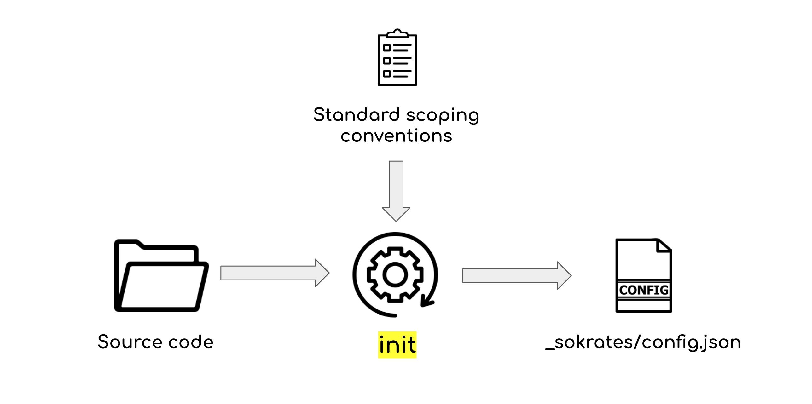
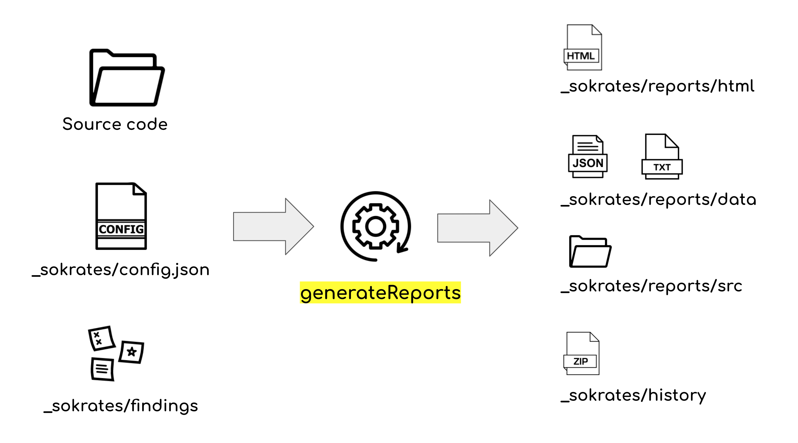
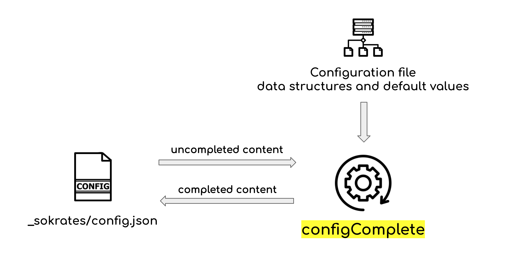
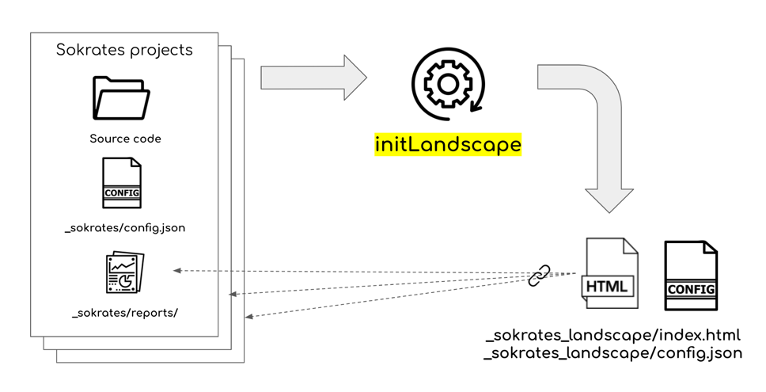
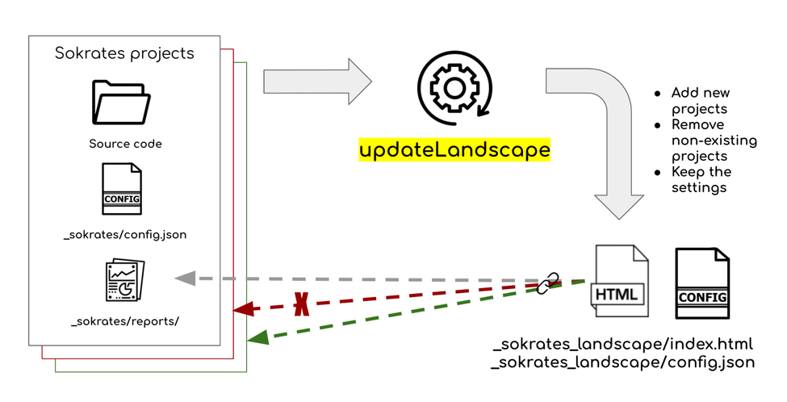

Usage: Command Line Interface
init command
generate a Sokrates configuration file for the codebase.

java -jar sokrates-0.9.jar init [options]
-srcRoot <arg> [OPTIONAL] the path to source code root folder (default is <currentFolder>)
-confFile <arg> [OPTIONAL] the path to configuration file (default is "<currentFolder>/_sokrates/config.json")generateReports command
generates Sokrates reports based on the configuration

java -jar sokrates-0.9.jar generateReports [options]
-confFile <arg> [OPTIONAL] the path to configuration file (default is "<currentFolder>/_sokrates/config.json")
-outputFolder <arg> [OPTIONAL] the folder where reports will be stored (default is "<currentFolder>/_sokrates/reports/")
-reportAll [DEFAULT] generate all reports
-reportData save only data in JSON and text formats (stored in <outputFolder>/data)
-reportOverview generate only the report describing the overview of files in scope (stored in <outputFolder>/html/SourceCodeOverview.html)
-reportDuplication generate only the duplication report (stored in <outputFolder>/html/Duplication.html)
-reportLogicalDecomposition generate only the components logical decomposition report (stored in <outputFolder>/LogicalDecomposition.html)
-reportFileSize generate only the file size report (stored in <outputFolder>/html/FileSize.html)
-reportUnitSize generate only the unit size report (stored in <outputFolder>/html/UnitSize.html)
-reportConditionalComplexity generate only the conditional complexity report (stored in <outputFolder>/html/ConditionalComplexity.html)
-reportCrossCuttingConcerns generate only the cross cutting concerns report (stored in <outputFolder>/html/CrossCuttingConcerns.html)
-reportMetrics generate only the metrics overview report (stored in <outputFolder>/html/Metrics.html)
-reportControls generate only the controls report (stored in <outputFolder>/html/Controls.html)
-reportFindings generate only the findings report (stored in <outputFolder>/html/Findings.html)
-internalGraphviz use internal Graphviz library (by default external dot program is used, you may specify
the external dot path via the system variable GRAPHVIZ_DOT)configComplete command
completes missing fields in the configuration file

java -jar sokrates.jar configComplete [options]
-confFile <arg> [OPTIONAL] the path to configuration file (default is "<currentFolder>/_sokrates/config.json"initLandscape command
create the configuration file for Sokrates landscape analysis (aggregated report of multiple Sokrates analysis results)

java -jar sokrates.jar initLandscape [options]
-analysisRoot <arg> the path to the root folder of multiple Sokrates projects, scans all subfolders for Sokrates reports and configurations. The folder where landscape reports will be stored (default is "<currentFolder>/_sokrates_landscape/reports/".
-confFile <arg> [OPTIONAL] the path to landscape configuration file (default is "<currentFolder>/_sokrates_landscape/config.json"updateLandscape command
updates the configuration file for Sokrates Landscape analysis

java -jar sokrates.jar updateLandscape [options]
-analysisRoot <arg> the path to the root folder of multiple Sokrates projects, scans all subfolders for Sokrates reports and configurations. The folder where landscape reports will be stored (default is "<currentFolder>/_sokrates_landscape/reports/".
-confFile <arg> [OPTIONAL] the path to landscape configuration file (default is "<currentFolder>/_sokrates_landscape/config.json"Running Sokrates as a Batch Process
# remove the temporary analysis folder
rm -rf analysis
# remove the reports folder
rm -rf reports
# create temporary analysis folder
mkdir analysis
mkdir analysis/_sokrates
#create the reports folder
mkdir reports
# copy Sokrates cofiguration file to the temporary folder
cp config.json analysis/_sokrates
cd analysis
# install latest version of Sokrates
curl -O https://d2bb1mtyn3kglb.cloudfront.net/builds/sokrates-0.9.jar
# checkout the code
git clone https://github.com/zeljkoobrenovic/sokrates.git
mv temp-git-dir/* .
rm -rf temp-git-dir
# run analysis
java -jar -Xmx10g sokrates-0.9.jar generateReports -reportAll
# copy generated reports to the reports folder
cp -r _sokrates/reports/* ../reports
cd ..
# remove the temporary analysis folder
rm -rf analysis